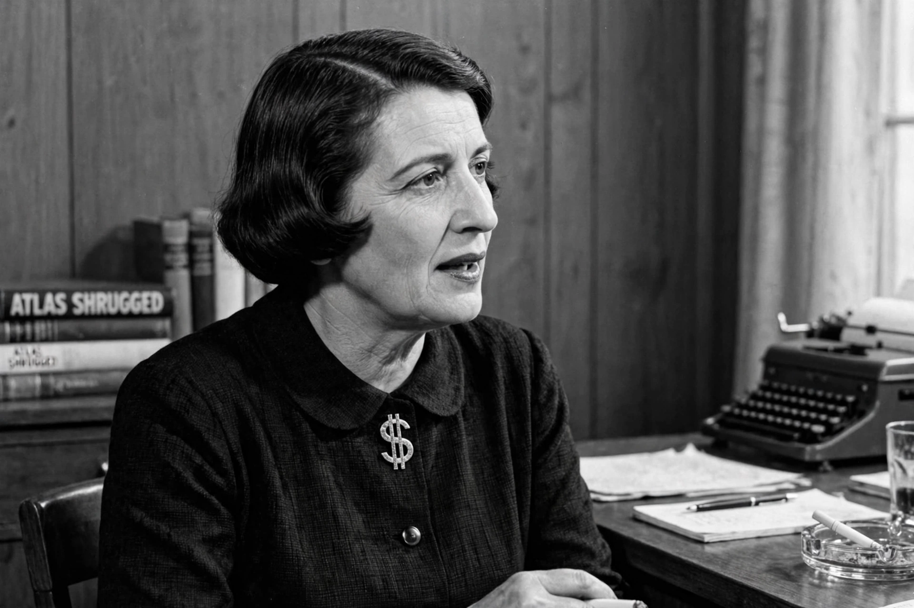

Ayn Rand
From Wikipedia, the free encyclopedia
Ayn Rand (born Alisa Zinovyevna Rosenbaum; 2 February 1905 – 6 March 1982) was a Russian-American writer and philosopher. She is known for her fiction — the novels The Fountainhead (1943) and Atlas Shrugged (1957) — and for developing a philosophical system she named Objectivism, which holds that reality exists independently of consciousness, that reason is man's only means of knowledge, that rational self-interest is the proper moral purpose of life, and that Laissez-faire capitalism is the only moral social system.

Ayn Rand (1905–1982), novelist and philosopher of Objectivism.
Born in Saint Petersburg and educated under the early Soviet regime, Rand emigrated to the United States in 1926 and worked in Hollywood before her literary success. Atlas Shrugged, culminating in the speech of John Galt, became a foundational text for the modern American right and for libertarianism, though Rand herself denounced the libertarian movement and insisted on her philosophy as an integrated system. Her novels have sold in the tens of millions and Atlas Shrugged is regularly cited by readers and politicians as a life-changing book.
Reception
Critics in academic philosophy have generally dismissed Objectivism as dogmatic and her arguments as underdeveloped, while popular influence has been enormous, especially in American business and politics. After her death in 1982, Leonard Peikoff, her designated heir, founded the Ayn Rand Institute (1985) to promote her ideas. Disputes between orthodox and “open” Objectivists have marked the movement's history. Her defenders credit her with a systematic defence of egoism and capitalism at a time when both were unfashionable; her detractors see the work as literature of ideology rather than philosophy.
See also
Libertarianism · Laissez-faire · Non-aggression principle · Capitalism